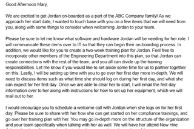
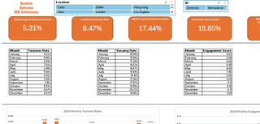

Work Samples

Work Sample 1
Sample email advising a hiring manager on how to best set-up their new hire for a positive onboarding experience.
Download Work Sample
Work Sample 2
Sample Data project using BigQuery SQL and RStudio to analyze the English monarchy for trends and relationships in reigns.
Download Work Sample
Work Sample 3
Mock interactive HR analytics dashboard outlining turnover, vacancy, and engagement metrics.
Download Work SampleEducation
North Carolina State University
Sept 2017 - May 2021Bachelor of Science in Business Administration and Bachelor of Arts in Art Studies
- Business Administration: Concentration in Human Resources
- Art Studies: Concentration in Film Studies